Rihanna is a 31 year old Barbadian singer songwriter, buisness woman, fashion designer, actress and philanthropist.
She was born Feb 20, 1988 in Saint Micheals Barbados.
Rihanna moved to the US, Los Angeles in 2004She signed to Def Jam at the age of 16 in 2005 and release her first album Music of the Sun
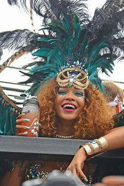 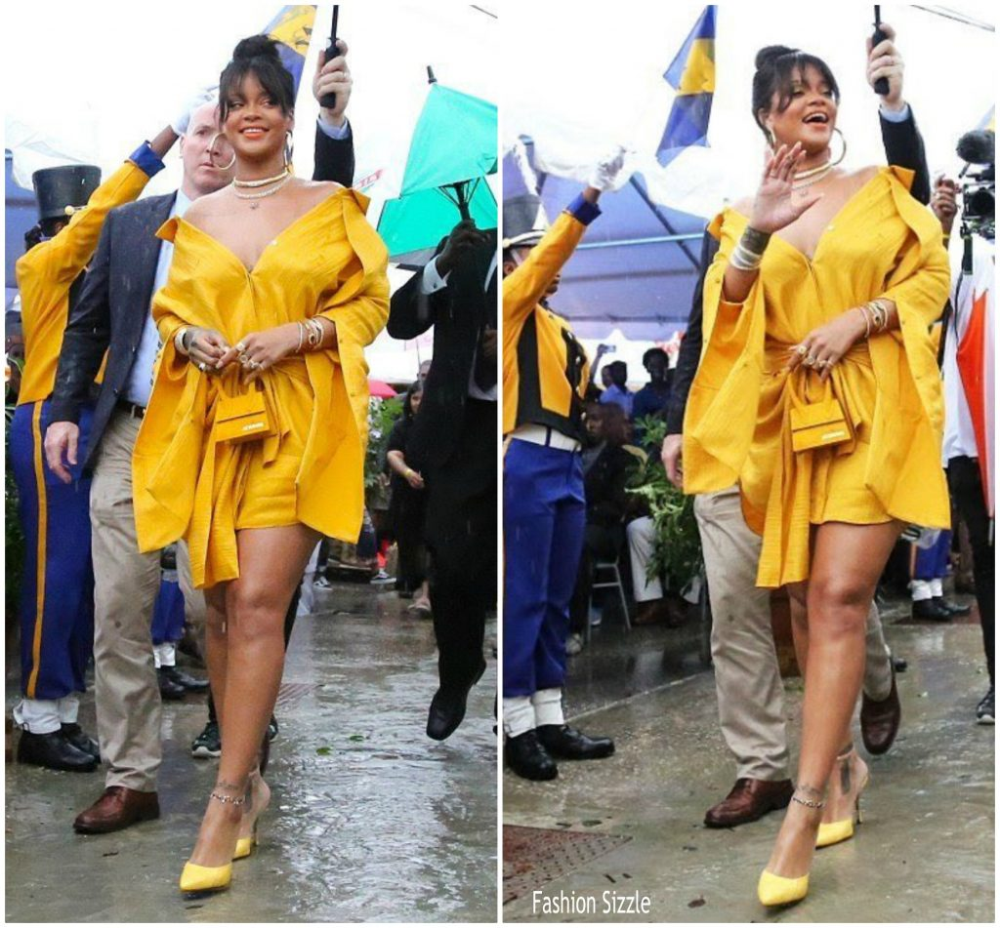 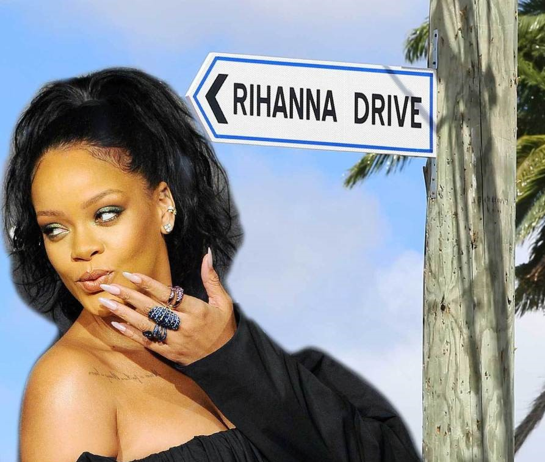 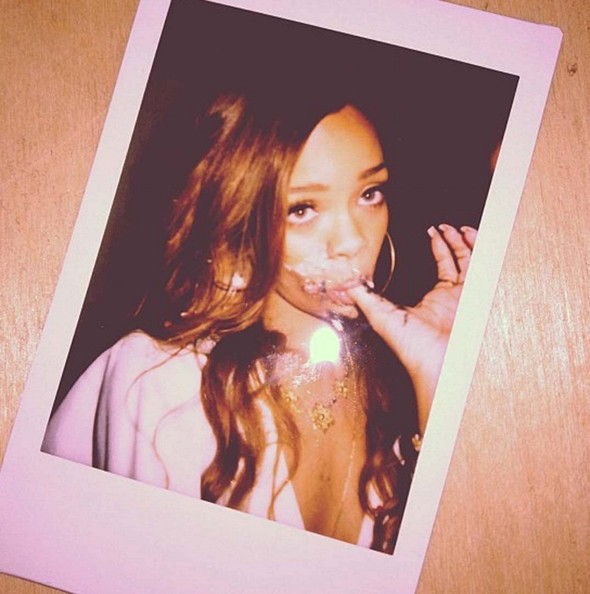
Riri and her mother, riri and her father, riri and her brother, all of them together, riri and other siblings, riri and her niece that she loves dearly (in that order)
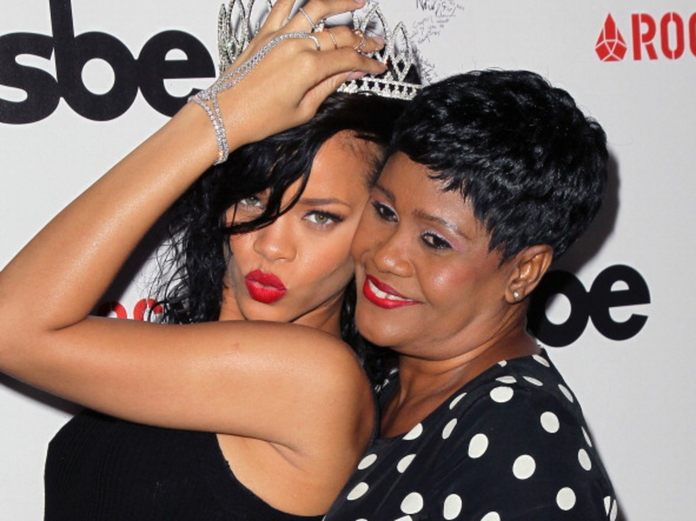 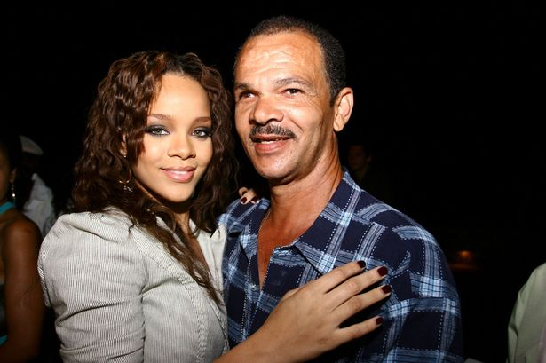 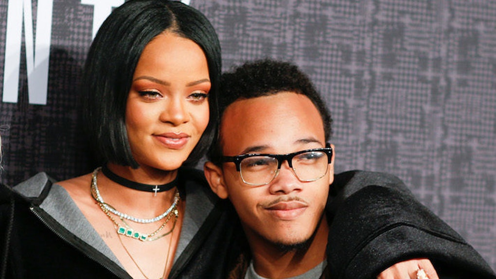 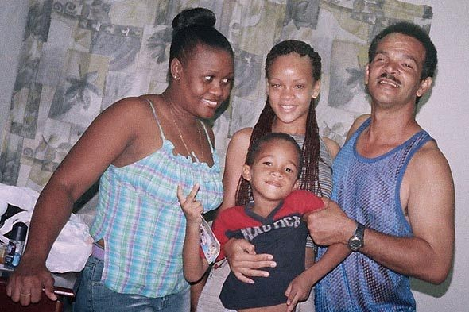 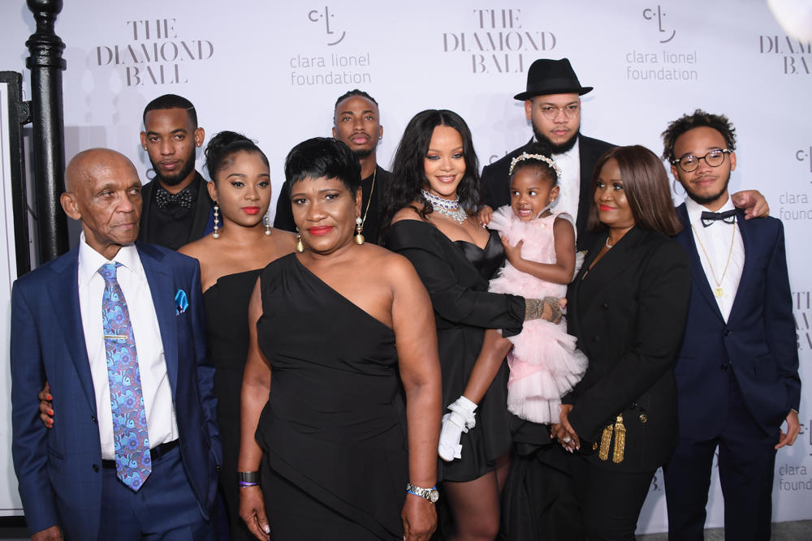 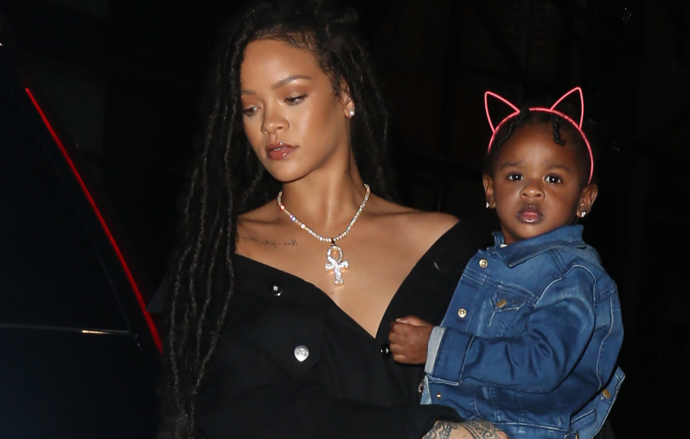
She debuts her hit song "pon de replay" with 93 million views on youtube which led her to win three awards. Rihanna has won 10 grammy awards, 12 billboard awards, 12 American music awards(including icon award) and 6 MTV Awards (including Michael Jackson video vanguard award).
AWARDSRihanna ventures into entrepreneurship and build a brand of her own which is a makeup line that is popular for it's broad inclusivity across skin tones and gender.she is also known for her fashion mechanism.
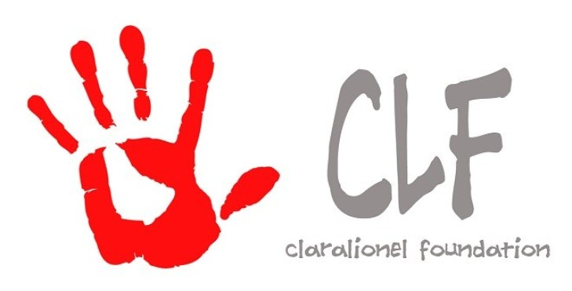 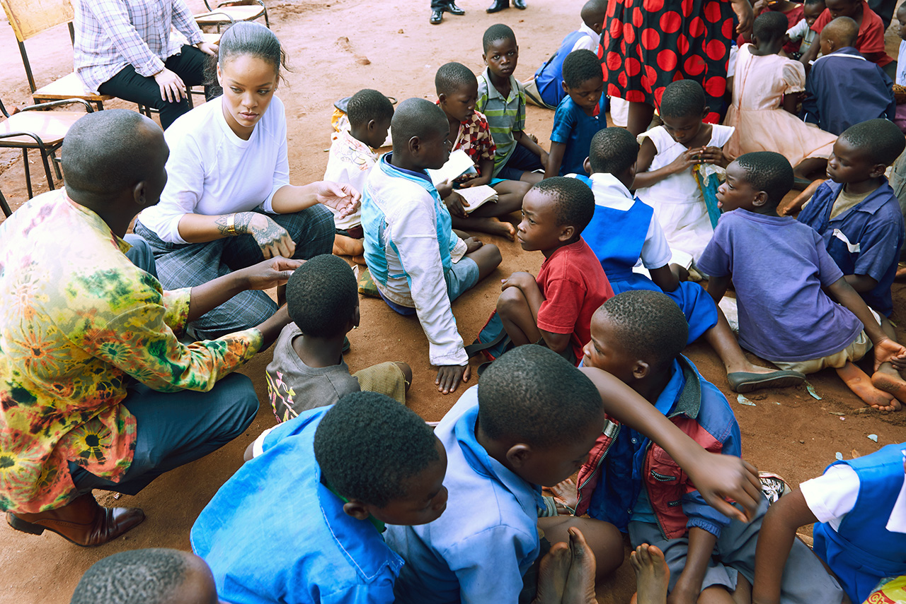 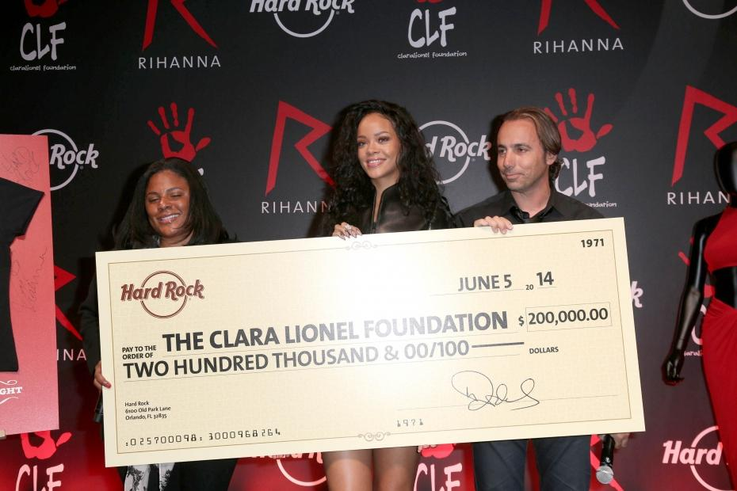